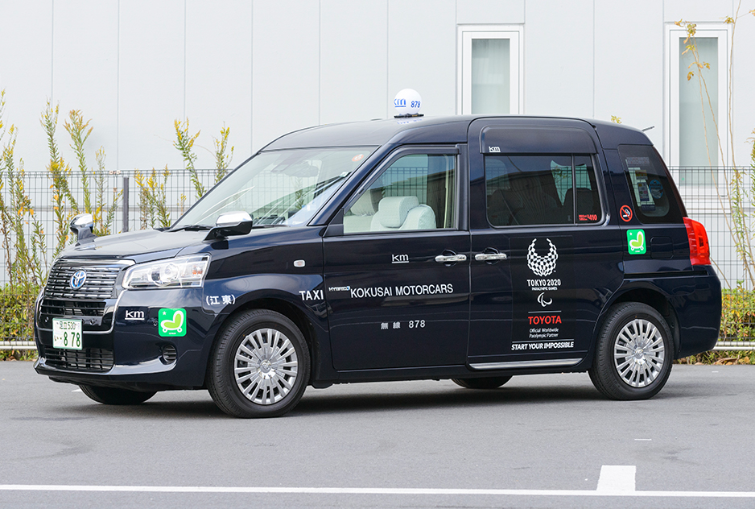
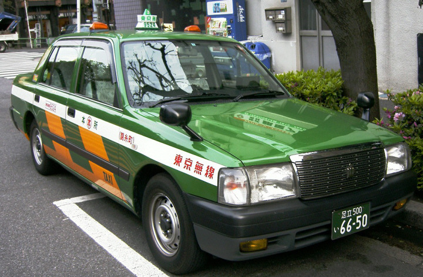
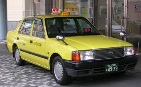
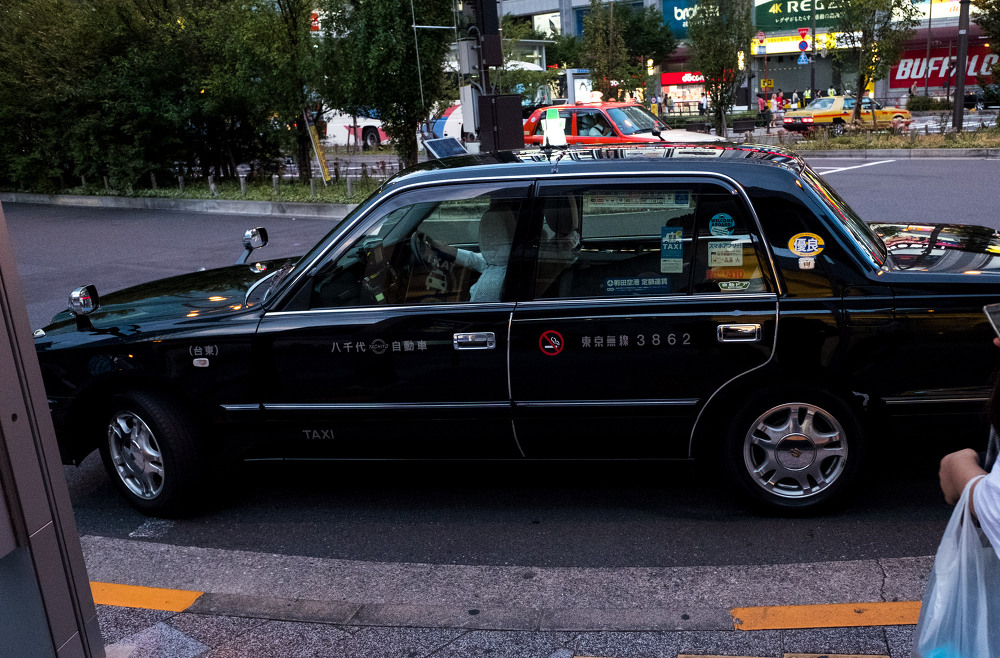

택 시




구 분
주행거리 / 시간
요 금
기본요금
1,194m(1.194km)
580엔
추가요금 (주행거리)
매 203m 당
50엔
심야할증
오후 10시 ~
익일 오전 5시
20% 할증
택시 대절
매 30분 당
2,050엔
장거리 할인
총 요금 9,000엔 이상 시
10% 할인
후쿠오카 공항 ↔ 하카타역
약 1,500엔
후쿠오카 공항 ↔ 텐진역
약 2,300엔